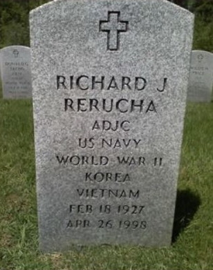

Richard Joseph Rerucha 1927 - 1998
[ Home ] | [ Calendar ] | [ Surnames Index ] | [ Errors ] | [ Family History ]Richard Rerucha, the husband of Betty Lou Sargent (the fifth cousin once-removed on the mother's side of Nigel Horne), was born in Nebraska, USA on 18 Feb 19271,2,3. He married Betty on 29 Dec 1946.
During his life, he was living in Oak Creek, Butler, Nebraska in 19404 and on 1 Apr 19405.
He died on 26 Apr 1998 in Kent, King, Washington, USA3 and was buried there at Tahoma National Cemetery after 26 Apr 19983.
Citations
- Social Security Death Index - Findmypast
- U.S. Veteran's Gravesites - Findmypast
- U.S., Find A Grave Index, 1600s-Current Ancestry.com Operations, Inc.
- US Census 1940 - Findmypast
- US Census 1940 - Findmypast (was age 13 and the son of the head of the household)
Media
Richard Rerucha
Richard Rerucha - gravestone

US Veterans Gravesites Transcription - USM-VETGRV-7279728
US Census 1940 - USC/1940/1476396396
Social Security Death Index - USBMD/SSDI/507201388
Family Tree

Map
Generated by ged2site. Last updated on Jul 3, 2024
Known Issues
Marriage date (29 Dec 1946) has no citations
Adding date of burial as 'aft 26 Apr 1998'